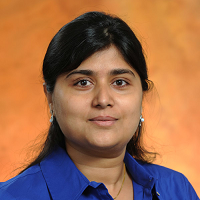
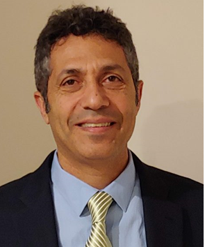
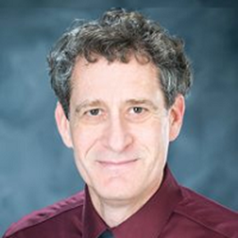
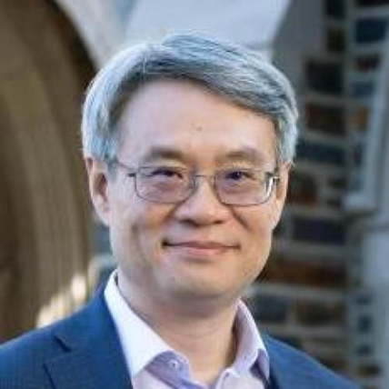
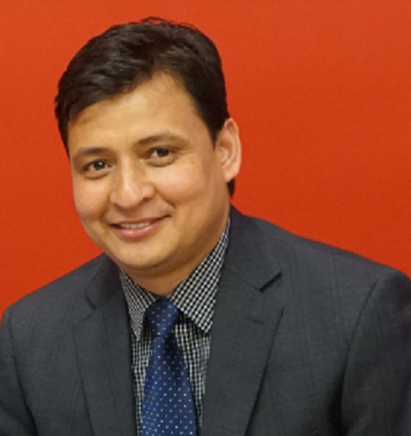
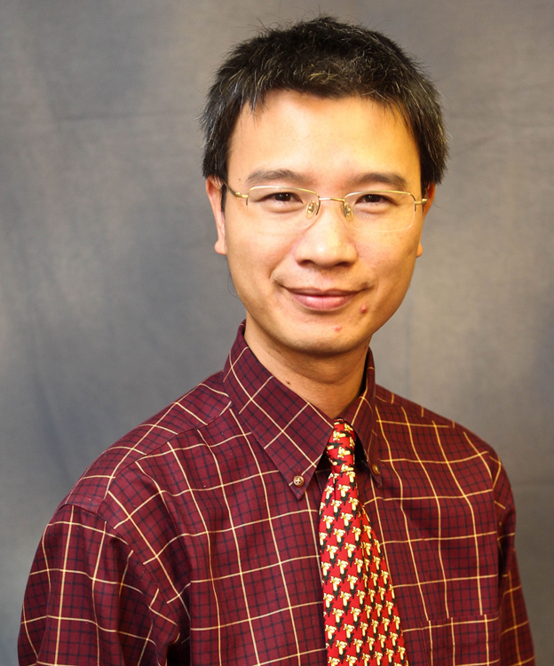
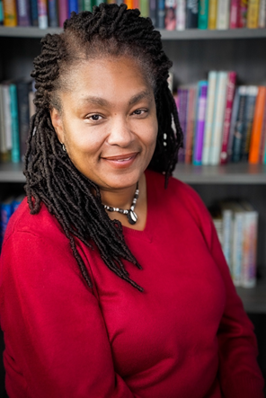

.jpg)
Keynote and Mentor Information
 NSF CISE MSI Workshop
NSF CISE MSI Workshop Keynote Speaker: Dr. Subrata Acharya (Lead Program Officer, CISE Research Expansion, NSF/CISE) |
Dr. Subrata Acharya is a computer scientist and the lead for the research expansion efforts across the National Science Foundation's Computer and Information Sciences and Engineering Directorate. She also serves as a EPSCoR liaison and advisor to the NSF CISE OAD on emerging research institutional research expansion efforts. Prior to her tenue at CISE, she has served as a Program Officer and disciplinary expert with the NSF Office of Integrative Activities for the Research Capacity and Competitiveness Program. She currently manages a large portfolio of cooperative agreements, standard and continuation grants, aimed at building research capacity, promoting entrepreneurship, stimulating workforce development, and broadening participation across the national STEM enterprise. She leads the CISE Research Expansion Programs and is the CISE co-lead for various NSF cross divisional and cross directorate programs including Expand AI, CISE Research Expansion, HBCU-Excellence in Research, Office of Advanced Cyberinfrastructure Campus Cyberinfrastructure, Smart Health and Biomedical Research in the Era of Artificial Intelligence and Advanced Data Science, and NSF INCLUDES Big Idea. She has served as a disciplinary expert and external evaluator for the National Security Agency and Department of Defense in the area of Cyber Operations, Risk Management and Compliance. She is an ardent advocate to promote equity and advancement of computing research in all aspects of scientific discovery across our nation. |
 Keynote Speaker and Panelist: Dr. Abraham Matta (Program Officer, CISE Research Expansion and CNS, NSF/CISE) |
Dr. Abraham Matta is a Professor in the Computer Science Department at Boston University, where he served as Chair of the department during 2018-2024. He received his Ph.D. in computer science from the University of Maryland at College Park in 1995. He works on the design of network protocols and architectures based on a range of computer science principles (such as inter-process communication, decomposition, and recursion), mathematical techniques (such as probabilistic analysis, queuing theory, optimization, and control theory), and performance evaluation tools (such as simulation and emulation). Application domains include the Internet, wireless, mobile, sensor and disruption-tolerant networks, cloud and distributed systems. He has published over 150 peer-reviewed technical papers. He received the National Science Foundation CAREER award (1997). He won a patent (2011) and two best-paper awards (2008 and 2010) for his work on wireless ad hoc and sensor networks. He won awards for his experimental work on the GENI testbed (Global Environment for Network Innovations) in 2018 and on the FABRIC testbed in 2023. He also won a best-paper award for his cloud computing work in 2021. He has been involved with the GENI project since 2013 as an experimenter and in outreach and education activities, including national and international collaboration meetings on cyberinfrastructure. He has been serving on the FABRIC Scientific Advisory Board since January 2020, and the FOUNT Scientific Advisory Board since November 2023. He has served as chair or co-chair of many technical program committees, such as the IEEE Online Conference on Green Communications (2012), IEEE Computer Communications Workshop (2011), and IEEE International Conference on Network Protocols (2005). He has served on many organizing committees, including as general chair of the 4th International Symposium on Modeling and Optimization in Mobile, Ad Hoc, and Wireless Networks (2006), and general co-chair of the IFIP International Conference on Wired/Wireless Internet Communications (2018). He is a senior member of the ACM and IEEE. He leads the Distributed Applications, Systems & Networks (DASNet) Group, and is a member of the Networks Research Group (NRG) at BU CS. He is currently serving as Associate Editor for IEEE Networking Letters |
 Panel Moderator: Dr. James E. Fowler (Program Officer, Communications and Information Foundations (CIF) Division) |
Dr. James E. Fowler is currently on detail as a program director in the Communications and Information Foundations (CIF) cluster of the Computing and Communication Foundations (CCF) division of the Computer & Information Science & Engineering (CISE) directorate of the National Science Foundation (NSF). James E. Fowler is currently a William L. Giles Distinguished Professor in the Department of Electrical and Computer Engineering at Mississippi State University, Starkville, MS. He holds a Billie J. Ball Endowed Professorship. He has held visiting professor positions in the Département Traitement du Signal et des Images at Télécom ParisTech, Paris, France, and at Polytech Nantes, Nantes, France. He held a postdoctoral research position in the Laboratoire I3S at the Université de Nice—Sophia Antipolis, Sophia Antipolis, France. He was the Editor-in-Chief of IEEE Signal Processing Letters from 2017–2019, and was previously a Senior Area Editor for IEEE Transactions on Image Processing and previously an Associate Editor for IEEE Transactions on Computational Imaging, IEEE Transactions on Image Processing, IEEE Transactions on Multimedia, and IEEE Signal Processing Letters. He is an Associate Editor for the EURASIP Journal on Image and Video Processing. He is currently the Past Chair of the Computational Imaging Technical Committee of the IEEE Signal Processing Society. He was the Chair of the Image, Video, and Multidimensional Signal Processing (IMVSP) Technical Committee of the IEEE Signal Processing Society for 2012–2013, having served as also as Vice Chair and Past Chair. He is currently a member of the Conferences Board and Education Board was previously a member of the Publications Board of the IEEE Signal Processing Society. He was a member of the Strategic Planning Committee of the IEEE Publication Services and Products Board in 2013. He is a Fellow of the IEEE. He is currently general co-chair of the Data Compression Conference, and he was general co-chair of the 2014 IEEE International Conference on Image Processing, Paris, France. He received the B.S. degree in Computer and Information Science Engineering and the M.S. and Ph.D. degrees in Electrical Engineering all from the The Ohio State University. |
 Keynote speaker: Dr. Yiran Chen (John Cocke Distinguished Professor of Electrical and Computer Engineering at Duke University, Director of NSF AI Institute for Edge Computing Leveraging Next-generation Networks (Athena), Fellow of the AAAS, ACM, IEEE, and NAI) |
Dr. Yiran Chen is currently the John Cocke Distinguished Professor of Electrical and Computer Engineering at Duke University. He is the director of the National Science Foundation (NSF) AI Institute for Edge Computing Leveraging Next-generation Networks (Athena), one of the 25 National AI Institutes in the United States, as well as the NSF Industry-University Cooperative Research Center (IUCRC) for Alternative Sustainable and Intelligent Computing (ASIC), and co-director of the Duke Center for Computational Evolutionary Intelligence (DCEI). His group's research focuses on new memory and storage systems, machine learning and neuromorphic computing systems, and mobile computing. He has supervised or is currently supervising, more than 60 Ph.D. students and 4 Postdocs throughout his academic career. 14 of his Ph.D. students and Postdocs have joined faculties at universities in the United States, Turkey, Hong Kong, and China, including 4 NSF CAREER Awardees. Chen has published one book and more than 600 technical publications and has been granted 96 US patents. He has been honored with 15 paper awards, including two test-of-time awards, and the other 16 best paper nominations from international journals and conferences. He has received numerous awards for his technical contributions and professional services. He is one of only three individuals to have received Technical Achievement Awards from both the IEEE Circuits and Systems Society and the Computer Society, with histories of 75 and 78 years, respectively. He has been a distinguished lecturer for the IEEE Council on Electronic Design Automation (CEDA) and Circuits and Systems Society (CASS), and a distinguished visitor of the IEEE Computer Society (CS). He is a Fellow of the AAAS, ACM, IEEE, and NAI, and currently serves as the chair of ACM SIGDA. He was the Editor-in-Chief of the IEEE Circuits and Systems Magazine from 2020 to 2023 and is the inaugural Editor-in-Chief of the IEEE Transactions on Circuits and Systems for Artificial Intelligence (TCASAI). |
 Mentor and Panelist: Dr. Danda B. Rawat (Associate Dean for Research & Graduate Studies, Professor of Electrical Engineering & Computer Science (EECS) at Howard University) |
Dr. Danda B. Rawat is an Associate Dean for Research & Graduate Studies, a Full Professor in the Department of Electrical Engineering & Computer Science (EECS), Founding Director of the Howard University Data Science & Cybersecurity Center, Founding Director of DoD Center of Excellence in Artificial Intelligence & Machine Learning (CoE-AIML) at Howard University, Washington, DC, USA. Dr. Danda B. Rawat successfully led and established the Research Institute for Tactical Autonomy (RITA), the 15th University Affiliated Research Center (UARC) of the US Department of Defense as the PI/Founding Executive Director at Howard University, Washington, DC, USA. Dr. Rawat is engaged in research and teaching in the areas of cybersecurity, machine learning, big data analytics and wireless networking for emerging networked systems including cyber-physical systems (eHealth, energy, transportation), Internet-of-Things, multi domain operations, smart cities, software defined systems and vehicular networks. Dr. Rawat has secured over $110 million as a PI and over $18 million as a Co-PI in research funding from the US National Science Foundation (NSF), US Department of Homeland Security (DHS), US National Security Agency (NSA), US Department of Energy, National Nuclear Security Administration (NNSA), National Institute of Health (NIH), US Department of Defense (DoD) and DoD Research Labs, Industry (Microsoft, Intel, VMware, PayPal, Mastercard, Meta, BAE, Raytheon etc.) and private Foundations. Dr. Rawat is the recipient of the US NSF CAREER Award, the US Department of Homeland Security (DHS) Scientific Leadership Award, Presidents’ Medal of Achievement Award (2023) at Howard University, Provost's Distinguished Service Award 2021, among others. He has delivered over 100 Keynotes and invited speeches at international conferences and workshops. Dr. Rawat has published over 300 scientific/technical articles and 11 books. Dr. Rawat has successfully supervised and graduated 34 PhD students (out of which 28 were under-represented PhD students including 13 female PhD students), successfully supervised 30+ MS students and mentored 4 postdocs, and has been supervising 25 PhD students and mentoring 4 postdocs. He has been serving as an Editor/Guest Editor for over 100 international journals including the Associate Editor of IEEE Transactions on Information Forensics & Security, Associate Editor of Transactions on Cognitive Communications and Networking, Associate Editor of IEEE Transactions of Service Computing, Editor of IEEE Internet of Things Journal, Editor of IEEE Communications Letters, Associate Editor of IEEE Transactions of Network Science and Engineering and Technical Editors of IEEE Network. He has been in Organizing Committees for several IEEE flagship conferences such as IEEE INFOCOM, IEEE CNS, IEEE ICC, IEEE GLOBECOM and so on. Dr. Rawat is a Senior Member of IEEE and a Lifetime Professional Senior Member of ACM, a Lifetime Member of Association for the Advancement of Artificial Intelligence (AAAI), a lifetime member of SPIE, a member of ASEE and AAAS, and a Fellow of the Institution of Engineering and Technology (IET). He is an ACM Distinguished Speaker and an IEEE Distinguished Lecturer (FNTC and VTS). |
 Mentor and Panelist: Dr. Fan Wu (Professor and Head of Computer Science Department at Tuskegee University) |
Dr. Fan Wu is professor and head of Computer Science Department at Tuskegee University. He is also the director of National Academic Center of Information Assurance Education (CIAE), and the Director of the Office of Undergraduate Research (TUOUR) at Tuskegee University. He received his Ph.D. degree in Computer Science from Worcester Polytechnic Institute (WPI) in 2008. He joined Tuskegee University in 2009. His research interests are in the areas of Data Science, AI/Machine Learning, Cybersecurity, Mobile Security, High-Performance Computing with GPGPU Technology, and Robotics. Dr. Wu’s work has resulted in He has published 2 book chapters, and more than 100 peer-reviewed technical papers in international journals or conference proceedings. Dr. Wu has received more than 20M funding to support his research from NSF, NIH, DHS, NASA, and DoD. |
 Mentor: Dr. Michelle Rogers (Associate Professor in the College of Computing and Informatics at Drexel University) |
Dr. Michelle L. Rogers is an associate professor in the College of Computing and Informatics at Drexel University. Dr. Rogers is engaged in research and teaching at the intersection of people, technology and information, primarily but not exclusively, in the healthcare domain. For more than 15 years, she has focused on solving three focused research problems (1) the evaluation of implementing and designing information technology in complex work systems, (2) the inefficient and ineffective healthcare information technology (HIT) used by healthcare providers' with and by medically underserved communities (patient portals and electronic medical records) and (3) understanding the success of women and girls' participation in STEM fields/careers. She has used techniques from industrial and systems engineering, sociotechnical systems theory, user interface design methodologies, scenario-based user evaluation and participatory design. She has secured funding from the National Science Foundation (NSF), Spencer Foundation, Robert Wood Johnson Foundation, and the Nokia Corporation. Internationally, Dr. Rogers has investigated HIT in the Ugandan maternal health system among midwives and other community health workers. Most recently, she is collaborating with faculty from industrial design, dance and education to understand how making, arts, and coding can assist in making the realization of a career in STEM fields achievable - Black Girls Steaming through Dance (BGSD). From 2020 - 2022, she served as a program officer at the National Science Foundation in the Computing and Networking Systems (CNS) division of the Computer and Information Science and Engineering (CISE) directorate. There, she was working on the Broadening Participation in Computing (BPC) efforts. |
Contact
Sponsor
Support
Dr. Kewei Sha, Associate Professor of Data Science, University of North Texas (UNT)
Dr. Sharad Sharma, Professor of Data Science, University of North Texas (UNT)
Dr. Peter J. Clarke, Associate Professor, Florida International University (FIU)